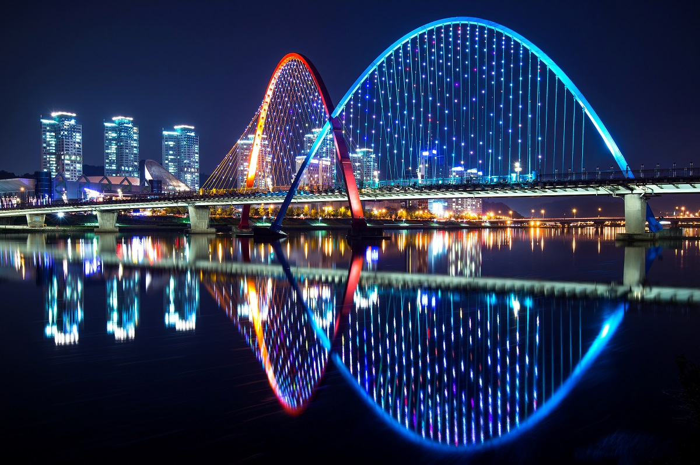

Daejeon (Korean: [tɛd͡ʑʌn] (audio speaker iconlisten)) is South Korea's fifth-largest metropolis, with a population of 1.5 million as of 2019.[2] Located in a lowland valley in the central region of South Korea, Daejeon serves as a hub of transportation for major rail and road routes, as well as for technology and administration sectors. The city is known for celebrating its natural environment, with most mountains, forests, hot springs, and rivers freely open for public use.[3] Daejeon is approximately 50 minutes from the capital, Seoul, by KTX or SRT high speed rail.
